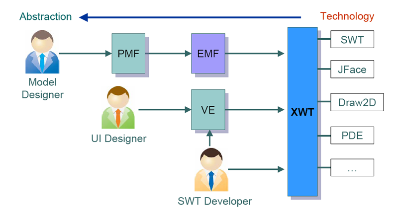
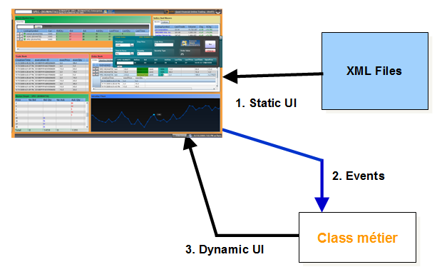
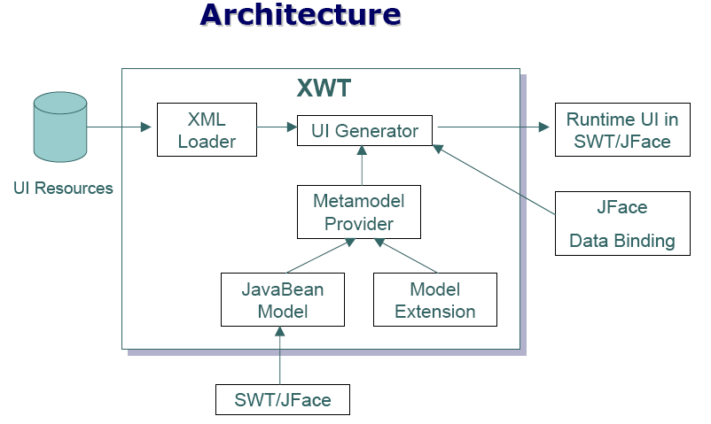

Project
What is XWT?
Declarative UI is a new programming paradigm, which is widely used in Web application development. In Eclipse, UI development in Java is the only proposed solution. This solution presents several drawbacks:
- High technology pre-requisite as UI developer
- Difficult to separate UI appearance and business logic
- Poor reusability
- Limitation of the dynamic UI support
- Very hard to integrate with development tools

XWT is designed specially for eclipse to resolve these problems by providing a foundation infrastructure. It is a UI framework based on an extensible markup language for application development in declarative programming paradism.
It adopts directly SWT/JFace UI model as XML serialization model. It uses in fact a direct mapping approach between XML grammar and UI runtime libraries.
XWT simplifies UI programming. You can create visible UI elements
in the declarative XML markup with a physical separation of the UI
definition from the run-time logic. An XML based declarative language is
very intuitive for creating interfaces ranging from prototype to
production, especially for people with a background in web design and
technologies. Unlike most other markup languages, XWT directly
represents the instantiation of managed objects.

XWT is XML UI for eclipse.
- XWT is a XML dialect
- Designed for human-editable and tooling
- Dynamic mapping with programming model
- Complete declarative UI framework integrated natively with SWT/JFace
- Powerful Declarative Data Binding solution on top of JFace data binding
- Reusable data presentation component
Benefices of XWT for eclipse
The main benefices of XWT are following:
- More human-readable and light-weight markup without ambiguity
between properties and child type
- High Extensible
- Well defined and complete specification
- Mature and Generic Declarative UI solution
Architecture

- SWT Model as XWT Model
- This model comes from the JavaBean reflection and additional models
to enhance the limitations of SWT API.
- This model can be changed to another
- XWT provides more concepts on top of XML
- Resource separation between UI and Event handling
- Dynamic mapping with UI Model and programming language
- Resource management
- Markup extensions
- Binding expression language